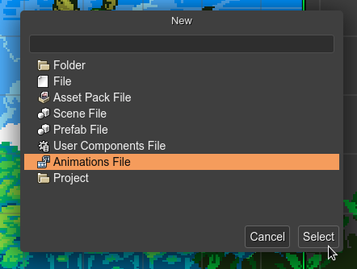
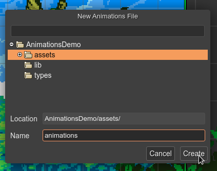
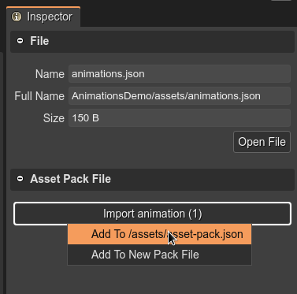

Create a new Animations file
To create an Animations file, open the New File dialog and select the Animations File option:
It opens the New Animations File dialog and asks for the name of the file and the location:
The file is created and opened in the Animations Editor.
In the majority of the cases, you want to add the animations file to an Asset Pack file. To do this, select the file in the Files view and the Inspector view will show you the option to add the animations to an Asset Pack file:
Also, you can load the animations file using the Animations Loader:
this.load.animation("playerAnimations", "assets/animations.json");